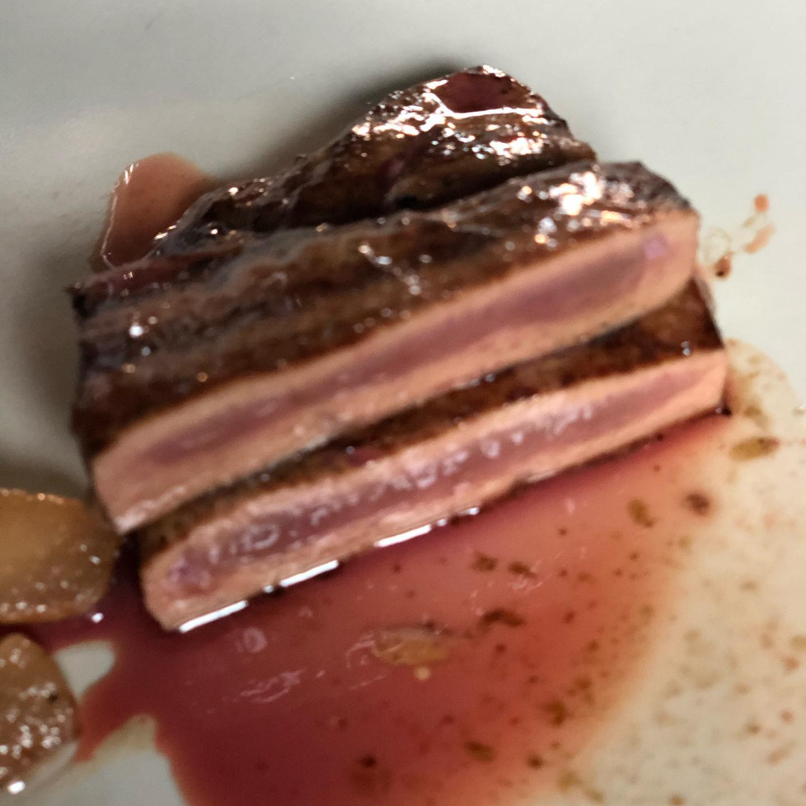

Vnútornosti podľa @vyzivamasozravca — Normy Jedál
Mnohých od konzumácie vnútornosti odrádza iba to, že “to” nikdy nejedli. Takže je to v hlave 🧠
Druhá skupina zase nevie, ako si ich pripraviť.
Hovädzia pečeň si vyžaduje vysoké teplo a krátku úpravu. Vtedy sa dosiahne chrumkavosť a zároveň sťavnosť, presne tak ako pri steakoch. Dĺžka úpravy závisí od toho, aký typ máte radi. Ja mám najradšej 👉RARE👈. A vy? 😋👍#vnutornosti #hovadziapecen #pkd #paleoketodiet #ancestralcarnivore #carnivore #steak #rare #